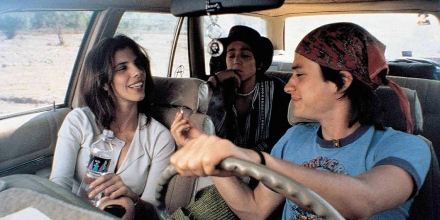
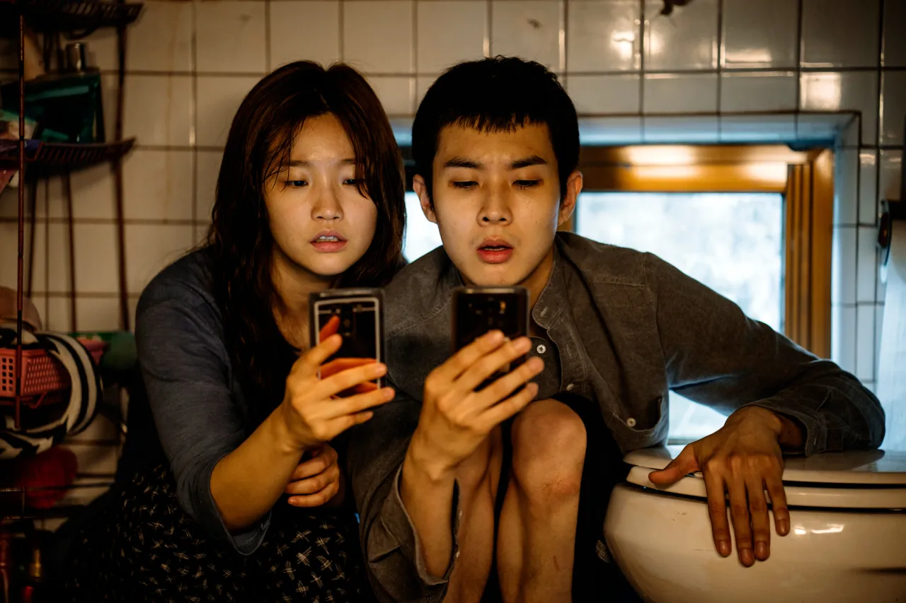
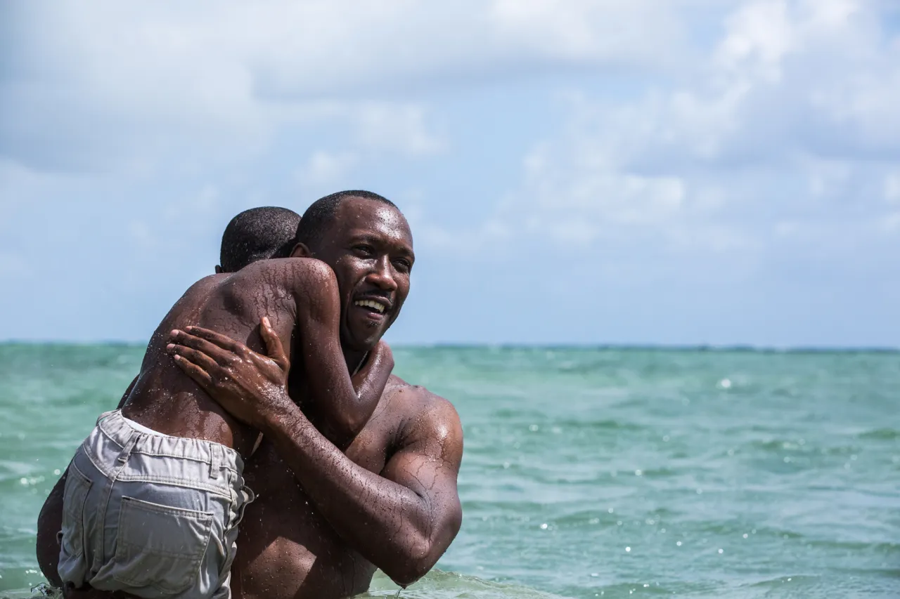
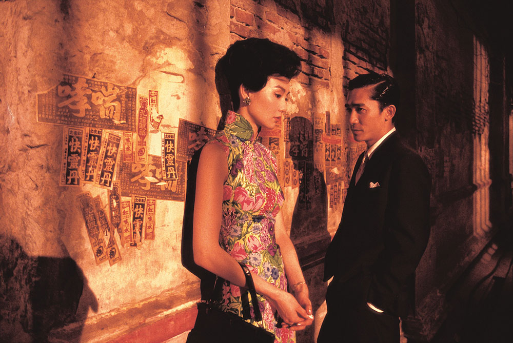
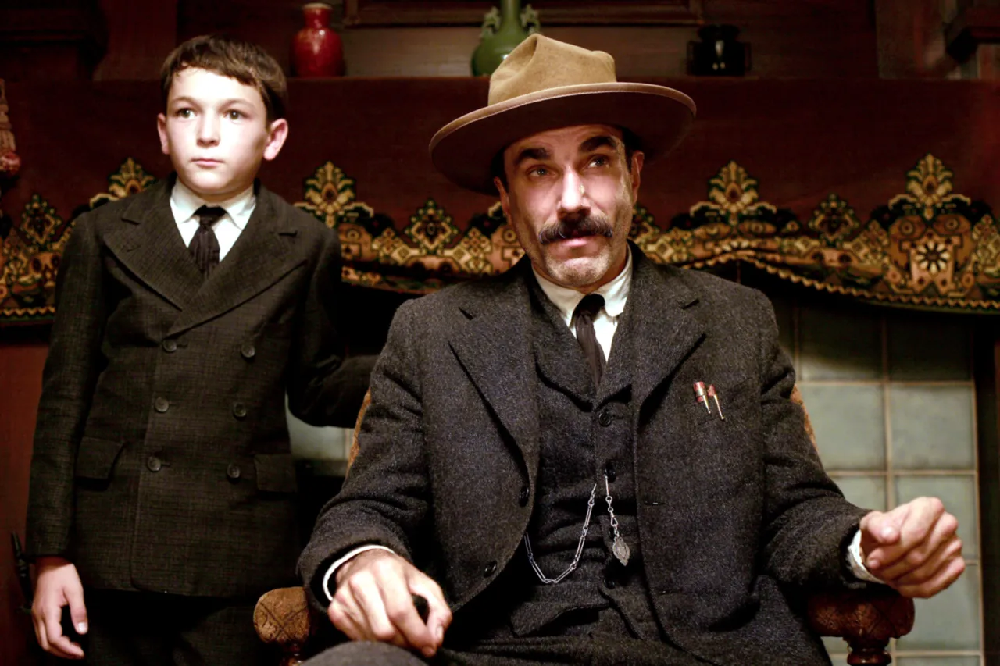

21. yüzyılın çeyrek asrını geride bıraktık ve filmlerin 25 yıl öncesine göre çok farklı bir yerde olduğunu söylemek, durumu hafifletmek olurdu. Teknolojik yenilikler, sektördeki dalgalanmalar, "sinematik evren" ifadesinin ortaya çıkışı – hem bir sanat formu hem de kitlesel eğlence olarak, bu mecra hem küçük hem de devasa şekillerde değişti. Filmleri izleme şeklimiz bile defalarca evrimleşti ve geriledi. Film altı kez öldü ilan edildi. Sonra da altı kez daha "hiç bu kadar iyi olmamıştı!" diye nitelendirildi. Yıldızlar gelip geçti, fikri mülkiyetler yükseldi ve düştü ve dikkat süreleri ve gözler için rekabet hiç bu kadar çetin olmamıştı. Bir zaman makinesiyle 2000 yılına geri dönün ve insanların size boş boş bakıp "Peki, TikTok nedir?!" diye sorduklarını izleyin.
Ancak, kaybolmayan şey, ışıklar söndüğünde (ister sinemada ister oturma odanızda olsun, biliyorsunuz – hedefiniz sinema salonu olsun) dönüşüm olasılığına teslim olmaya hala istekli olan izleyiciler üzerinde harika bir filmin sahip olabileceği güçtür. Aşağıdaki 100 film, filmlere hala inanan, hala onlara takıntılı olan, hala onlarda heyecan, ürperti ve kurtuluş bulan bir avuç Rolling Stone yazarının, nispeten genç olan bu yüzyılın en iyileri olarak adlandırdığı filmleri temsil ediyor. Bu, şüphesiz yaşayan bir belge; yıllar geçtikçe bu listeye eklemeler yapacağımızdan hiç şüphemiz yok. Ancak buradaki her bir film, filmlerin insanlığımızı bize nasıl yansıtabileceğini, hayal gücümüzü nasıl harekete geçirebileceğini, bizi güldürmeye, ağlatmaya, şaşırtmaya veya harekete geçmeye nasıl ilham verebileceğini ve ilk başta neden sinemaya aşık olduğumuzu bize hatırlattı. Komedi filmlerinden trajedilere, biyografik filmlerden süper kahraman destanlarına, stop-motion tilkilerden milkshake içen iş adamlarına kadar, bu yüzyılın sinema açısından en önemli yapımları arasından seçtiklerimiz.
5. Y Tu Mamá También (2001)

Meksikalı film yapımcısı Alfonso Cuarón iki En İyi Yönetmen Oscar'ı kazanmadan ve Hollywood'u fethetmeden önce, genç arkadaşları Tenoch (Diego Luna) ve Julio'nun (Gael García Bernal) çekici yaşlı evli bir kadın olan Luisa'yı (Maribel Verdú) uzak, muhteşem bir plaja bir yolculuğa çıkarak onlara eşlik etmesi için tatlı konuştuğu bu müstehcen romantik komediyi dünyaya hediye etti. Ütopik varış noktası mevcut değil, ancak bu doğaçlama kaçamaktan kurtulabileceklerini ve çapkın, sessizce melankolik bir güzellikle gol atabileceklerini düşünecek kadar kibirli (veya aptal)lar. Buharlı üçlülerin ve kötü mastürbasyon şakalarının ötesinde, Cuarón'un insancıl yetişkinlik draması, ekonomik eşitsizlik ve yaygın siyasi protestolar zamanında Meksika toplumunun bir anlık görüntüsünü yakalar. Filmin hormon çılgını adamları etraflarındaki daha geniş dünyayı fark edemeyecek kadar siklerine odaklanmış olabilirler, ancak Y Tu Mamá También, ölümlülük, özgürlük ve erkek arkadaşlığı hakkında dokunaklı bir inceleme sunarak keskin bir şekilde farkındadır. Hala bu genç yüzyılın en azgın filmlerinden biri, bu da aynı zamanda yaşamın kendisinin kırılganlığının ve baştan çıkarılmasının derinden hissedilen bir kutlaması olmasını engellemiyor. —T.G.
4. Parazit (2019)

Bong Joon Ho'nun komik, korkunç ve şiddetli hicivi, çok az Güney Kore filminin Amerikan izleyicileri için sahip olduğu bir şekilde ortaya çıktı ve nihayetinde Akademi Ödülleri'nde En İyi Film'i eve götürdü. Snowpiercer ve Okja (2017) filmlerinde İngilizce konuşan yıldızlarla iki bilim kurgu filmi yaptıktan sonra Bong, hem birleşmiş hem de sınıfa göre bölünmüş iki ailenin hikayesi için memleketi Kore'ye döndü. Bir yandan, sürekli sular altında kalan bir bodrum dairesinde yaşayan Kim'ler var. Öte yandan, kelimenin tam anlamıyla bir cam evde yaşayan Parklar var. Yavaş ama emin adımlarla, Kim ailesinin her üyesi, nitelikleri ve birbirleriyle olan ilişkileri hakkında yalan söyleyerek Parklar için çalışmaya başlar. Ve oradan destan daha vahşi ve daha tuhaf hale geliyor, yağmurlu bir gece yakın tarihin en unutulmaz kıvrımlarından birini sağlıyor. Tüm filmin üzerinde asılı olan uğursuz bir kalite var, ancak saf komedi ile eşleşen bir kalite var “Jessica, tek çocuk, Illinois, Chicago” mükemmel bir örnek. Kan akmaya başlamadan önce bu kahkahalar sizi içine çekiyor, bu hikayenin kökündeki öfke ön plana çıkıyor. Burada kahraman ya da kötü adam yok. Bunun yerine, sahip olanlar ve sahip olmayanların hepsi acı verici bir şekilde insandır, bu da hikayenin trajedisini çok daha büyük hale getirir - ve Parasite'i bir neslin endişelerini görkemli bir şekilde acımasız bir şekilde yansıtan dönemi için mükemmel bir film haline getirir. —E.Z.
3. Moonlight (2016)

Barry Jenkins'in ikinci filmi hiçbir yerden çıkmış gibiydi - oyun yazarı Tarell Alvin McCraney'in az bilinen eseri "In Moonlight Black Boys Look Blue"un bir uyarlaması, az endüstri suyuna sahip mütevazı bir bağımsız distribütörün izniyle (A24 nedir?) ve etkileyici 2008'deki ilk filmi Medicine for Melancholy'yi takip etmeye çalışırken engellerle karşılaşan bir yönetmen. "Oyun değiştirme", izleyiciler o zamanlar 37 yaşındaki film yapımcısının ne yaptığını gördükten sonra sahip olduğu etkiyi tanımlamaya başlamaz. Hassas bir genç Florida çocuğunun erkekliğe giden kayalık yolunu üç zaman dilimi ve üç farklı aktörle (Alex R. Hepsi muhteşem olan Hibbert, Ashton Sanders ve Trevante Rhodes), Jenkins, Afrikalı-Amerikalı yaşamın acılarını ve coşkularını çok öznel bir prizma aracılığıyla kırıyor. Yine de bize hediye ettiği hikaye, onu kategorize etme girişiminin ötesine geçiyor. Moonlight, sonunda acıyla kendine gelen bir insana derin, şefkatli, sempatik bir bakıştır. Mahalledeki uyuşturucu satıcısından (Mahershala Ali) bağımlı anneye (Naomie Harris) ve lisedeki sert adama kadar her karakter kalabalıklar içerir. Her çekim büyüleyici görünüyor. Tam doğru zamanda vuran ve hak ettiği izleyiciyi bulan, ömür boyu bir kez olan bir projedir. Medyanın tam ifade cephaneliği vizyona sahip biri tarafından vurulduğunda filmler böyle görünür. —D.F.
2. In The Mood For Love (2000)

Tozlu bir pencere camından hatırlanan kaybolan yıllar gibi (filmin anlamlı ayrılık sözlerini yeniden ifade etmek için), Wong Kar-Wai'nin sinematik ton şiiri, 1962 İngiliz Hong Kong'unu romantik can sıkıcısı başyapıtı için uzun zaman önce bir ortam olarak kullanıyor - elektriksel bir özlem atmosferiyle dolu bir dizi huzursuz an. Terk muhabir Bay Chow (Tony Leung), bir ithalat-ihracat şirketinde vicdani bir sekreter olan alt mektup Bayan Chan'ın (Maggie Chung) hemen yanında birkaç oda kiralıyor. Tesadüfen komşular aynı gün kendi evlerine taşınır, neşeli apartman binası buttinskis yakınlarda gezinirken, dikkati dağılmış taşıyıcılar yanlışlıkla ilgili eşyaları iç içe geçirir. Chow ve Chan'ın işkolik eşleri - her ikisi de yurtdışına seyahat ediyor, mesai saatlerinden sonra girip çıkıyor, yüzleri hiç görünmüyor - etrafta olamayacak kadar meşguller. Ve çok benzer hediyeler (natty bir kravat, şık bir çanta), her zaman yok olan nişanlıların aslında birbirleriyle bir ilişkisi olduğuna dair ipuçları haline gelir. Zaman geçtikçe, güvenleri ve tesellileri kaçınılmaz olarak onları bir araya getirir ve yakındaki bir otelin 2046 numaralı odasındaki görevlerde doruğa ulaşır. Ve her zaman alçaklı olan kamera, tutuklanan şevkten başka bir şey göstermez. WKW, günlük ritimleri bir mantra gibi tekrarlar: Karakterlerimiz aynı dar koridorlarda yürür, aynı boş sokaklarda oyalanır, aynı yüzeysel işleri gerçekleştirir. Chan'ın iki düzine figüre oturan cheongsam elbisesi bile kutsal durgunluk üzerine çarpıcı bir meditasyon gibi geliyor. Ve hepsi muhteşem bir şekilde fotoğraflandı (usta görüntü yönetmeni Christopher Doyle'a sahne), Shigeru Umebayashi'nin yaylı koparan vals "Yumenji'nin Teması" (bir Seijin Suzuki dramasından geri dönüştürülmüş) ve Nat King Cole'un Amerikan şarkı kitabı standartlarının İspanyolca versiyonlarının döngülü bir film müziğine puanlandı. Acı veren tekrar, kırık kalpli aşıkların onları paketlemeden önce kısacık ecstasies'lerini yeniden oynatmaları, onları kutsal anıtlara fısıldamaları ve sonsuza dek korunacak sırları kapatmaları ile mesele budur. Bunu kutsal yalnızlık olarak düşünün: coşkulu, sarhoş edici ve acı tatlı bir şekilde yüce. —S.G.
1. There Will Be Blood (2007)

Paul Thomas Anderson'ın Amerikan açgözlülüğünün köken hikayesi, yeni milenyumumuz boyunca bir derrick gibi yükseliyor, gölgesi deli petrol baronu Daniel Plainview'ın kendi çağına attığı siluet kadar heybetli. New Mexico'nun bağırsaklarındaki ilkel bir açılıştan itibaren, yazar-yönetmenin yüzyılın bir avrışını diğerine bağlamak ve sinema tarihi boyunca uzun bir boru hattı inşa etmek amaçladığı açıktır. Kaderini kayadan ayıran bir adamın sözsüz kararlılığı, Plainview'un öfkeli yüzünün etkileyici yakın çekimleri gibi erken dönem filmlerin ihtişamını çağrıştırıyor - yani farklı bir tahrikli Daniel'in (Day-Lewis) muhteşem bıyıklı ve taşlı yüzü. Aynı affetmez Teksas ovalarında çekilen Kubrick, Malick ve Giant'ın yankıları da var; filmi bitiren eski bir malikanede intikamcı gevezelik bile Charles Foster Kane'yi akla getiriyor. O kompozit Büyük Adam ile aynı nefeste Plainview'dan bahsedebilmeniz, Anderson'ın kendi vahşi girişimci hırsında Büyük Amerikan Filmi'nin efsanevi idealine ulaşmaya ne kadar yaklaştığının bir kanıtıdır. Evet, Blood, büyük vizyonlarla tam olarak fışkırmayan bir günümüz için değerli olan Eski veya Yeni Hollywood destanı ölçeğine sahiptir. Ama aynı zamanda Johnny Greenwood'un atonly tıklama skoru şeklinde veya Day-Lewis ne zaman basınçlı, şok edici derecede komik, Oscar ödüllü invektif gayzerlerine küçümsediğinde serbest bırakılan pürüzlü modern bir ruha sahip. (Milkshake şakaları çabuk eskidi, ancak onlara ilham veren doruk sözlü intikam kesinlikle eskimedi.) Upton Sinclair'in sayfalarından gevşek bir şekilde çıkarılmış olsa da, enkarne olan bu şaşırtıcı karakter çalışması, zevkli edebi saygıdan kilometrelerce uzakta ve Anderson, ağır ve klasik bir şey yapma isteklerinin kendine özgü hayal gücünü silmesine asla izin vermiyor - bir önceki yüzyılın son destanında bir kurbağa vebası hayal eden aynı. Belki de film gerçekten kalıcıdır çünkü o zamanların portresi, rahatsız edici bir kaçınılmazlıkla, şu anın bir kehanetine dönüştü. 21. yüzyılla, yaratıcı olarak gelip yok edici olarak ayrılan vampir bir kapitalist hakkında bir dramadan daha alakalı ne olabilir? —M.Ö.